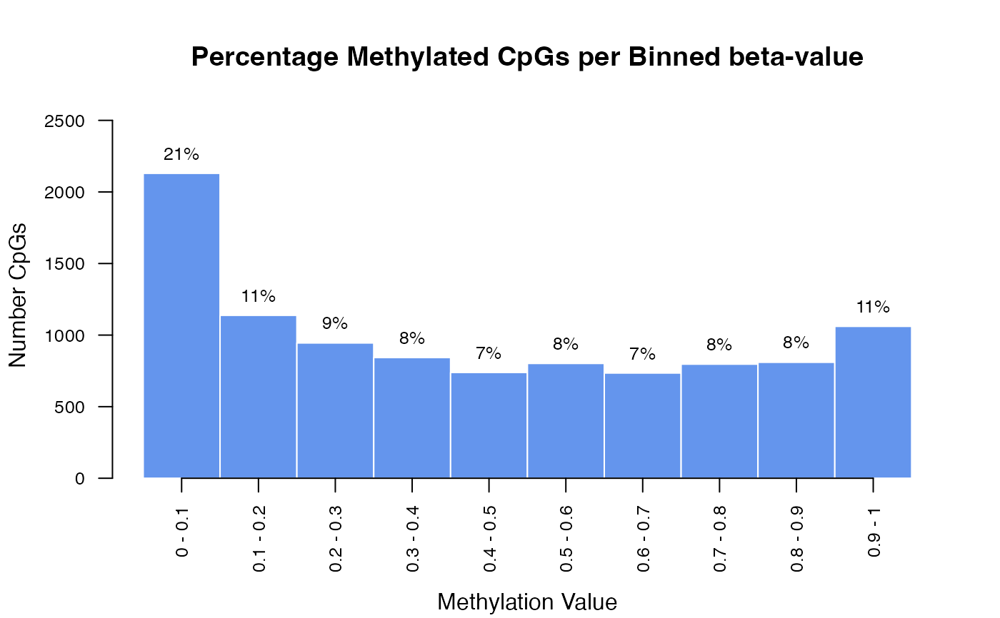
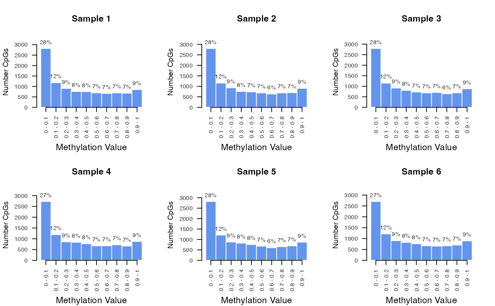

Create a binned histogram of methylation percentage statistics
Source:R/plot-meth-hist.R
plot_meth_hist.RdCreate a binned histogram of methylation percentage statistics
Usage
plot_meth_hist(
x,
bar_color = "cornflowerblue",
border_color = "white",
plot_title = NULL,
y_label_cex = 1,
x_label_cex = 1,
label_cex = 0.8,
y_axis_cex = 0.8,
x_axis_cex = 0.8,
y_axis_label = "Number CpGs"
)Arguments
- x
numeric vector of methylation beta-values
- bar_color
color of the histogram bars. Default = 'cornflowerblue'
- border_color
color of the borders for each bar. Default = 'white'
- plot_title
title of the plot. Default = NULL
- y_label_cex
size of the y-axis label. Default = 1
- x_label_cex
size of the x-axis label. Default = 1
- label_cex
size of the barplot labels. Default = 0.8
- y_axis_cex
size of the y-axis values. Default = 1
- x_axis_cex
size of the x-axis values. Default = 0.8
- y_axis_label
name of the y-axis. Default = 'Number of CpGs'
Examples
# Example methylation data (single column of a matrix)
data <- rbeta(runif(1e4), 0.6, 0.8)
plot_meth_hist(data, plot_title="Percentage Methylated CpGs per Binned beta-value")

# Plot all columns of a matrix
m <- replicate(6, rbeta(1e4, 0.5, 0.8))
colnames(m) <- paste("Sample", 1:6)
# Create a square grid
n <- ncol(m)
ncols <- ceiling(sqrt(n))
nrows <- ceiling(n / ncols)
par(mfrow = c(nrows, ncols))
for (i in 1:n) {
plot_meth_hist(as.numeric(m[, i]), plot_title = colnames(m)[i], x_label_cex = 0.8)
}
